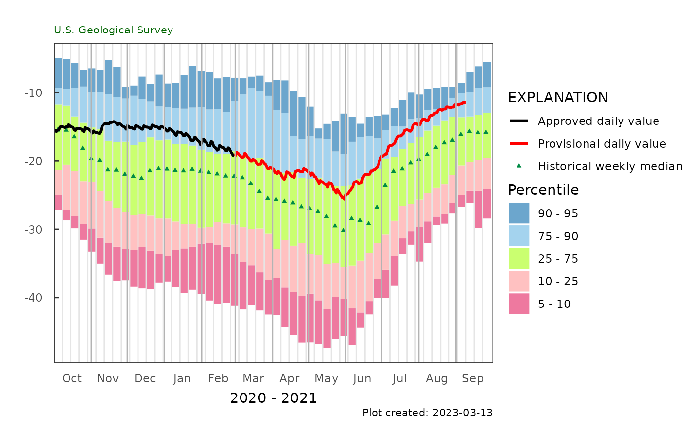
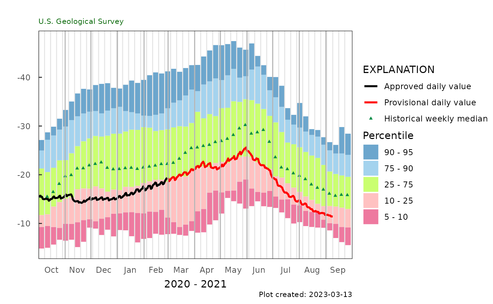

The weekly frequency analysis is based on daily data
weekly_frequency_plot( gw_level_dv, parameter_cd = NA, date_col = NA, value_col = NA, approved_col = NA, plot_range = c("Past year", "Calendar year"), plot_title = "", y_axis_label = "", flip_y = FALSE )
| gw_level_dv | data frame, daily groundwater level data. Often obtained
from |
|---|---|
| parameter_cd | If data in gw_level_dv comes from NWIS, the parameter_cd
can be used to define the value_col.
If the data doesn't come directly from NWIS services, this
can be set to |
| date_col | the heading of the date column. The default is |
| value_col | name of value column. The default is |
| approved_col | name of column to get provisional/approved status. |
| plot_range | the time frame to use for the plot. Either "Past year" to use the last year of data, or "Calendar year" to use the current calendar year, beginning in January. |
| plot_title | the title to use on the plot |
| y_axis_label | the label used for the y-axis of the plot. |
| flip_y | logical. If |
a ggplot object with rectangles representing the historical weekly percentiles, and points representing the historical median and daily values
# site <- "263819081585801" p_code_dv <- "62610" statCd <- "00001" # gw_level_dv <- dataRetrieval::readNWISdv(site, p_code_dv, statCd = statCd) gw_level_dv <- L2701_example_data$Daily weekly_frequency_plot(gw_level_dv, date_col = "Date", value_col = "X_62610_00001", approved_col = "X_62610_00001_cd")#> Warning: Removed 5 rows containing missing values (geom_rect).#> Warning: Removed 1 rows containing missing values (geom_point).weekly_frequency_plot(gw_level_dv, parameter_cd = "62610")#> Warning: Removed 5 rows containing missing values (geom_rect).#> Warning: Removed 1 rows containing missing values (geom_point).weekly_frequency_plot(gw_level_dv, parameter_cd = "62610", flip_y = TRUE)#> Warning: Removed 5 rows containing missing values (geom_rect).#> Warning: Removed 1 rows containing missing values (geom_point).